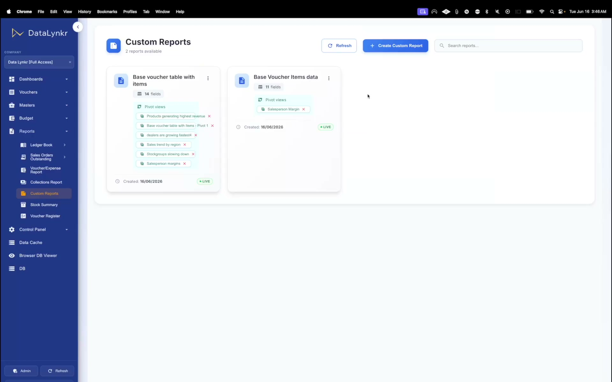
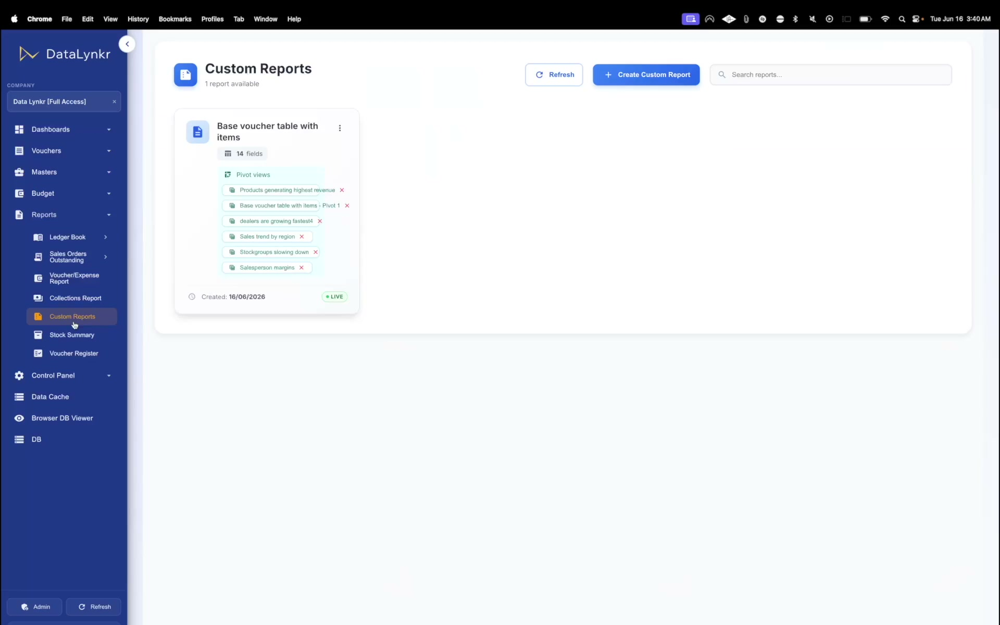
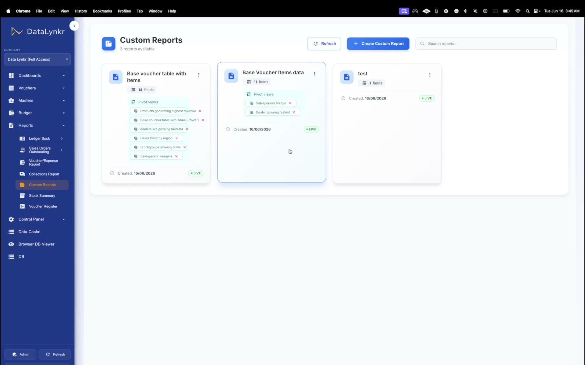

Create powerful pivot-style reports using live Tally data with a simple drag-and-drop interface. Analyze sales, inventory, finance, and custom fields without exports, formulas, or technical support.

Transaction records are stored inside Tally system.
Export static rows as XML/Excel worksheets.
Rebuild formulas, link spreadsheets, format layouts.
Create pivot views, email out of date sheets to team.
Exporting to spreadsheets to build reports is slow, limits team collaboration, and creates major operational headaches:
Confidential client ledger exports are copied on unprotected local storage.
Exporting massive logs slows down standard bookkeeping in Tally.
Decision makers look at yesterday's sales figures and payment outstanding.
Broken formulas and circular references corrupt financial numbers.
Waiting on the IT or accounts department for customized filter adjustments.
| Feature | Traditional Excel Reporting | DataLynkr Custom Reports |
|---|---|---|
| Data Latency | Hours or Days (outdated snapshot) | Live Sync (refreshed in seconds) |
| Report Setup Time | Manual exports, formatting formulas each time | One-click load (saved template layout) |
| Drag & Drop Dimensions | Complex Excel Pivot wizard setup needed | Visual grid controls (drag & drop columns) |
| Data Control / Security | Files can be copied, sent, or leaked | Role-based browser permissions |
| Tally Performance | Heavy exports freeze Tally books | Local caching, zero Tally disruption |
Spreadsheet files require complete rebuilds for new cycles. In DataLynkr, click refresh to pull the latest Tally vouchers directly into your saved templates.
Pick dimensions, categories, and custom Tally filters.
Click save to lock the report parameters for future reference.
Trigger the instant sync with your local Tally database.
No rebuilding reports, no exporting again, and zero spreadsheet maintenance.
| Sales Territory | Invoice Volume | Collected Value | Receivables |
|---|---|---|---|
| West Zone (Maharashtra/Gujarat) | 1,480 Bills | ₹4.82 Cr | ₹85.2 Lakhs |
| North Zone (NCR/Punjab) | 980 Bills | ₹3.14 Cr | ₹52.0 Lakhs |
| South Zone (Karnataka/TN) | 2,150 Bills | ₹6.90 Cr | ₹1.15 Cr |
Spreadsheets sent over WhatsApp or email are easily saved on personal disks and sent to competitors.
Once exported, you have no audit trail of who is viewing, sharing, or editing sensitive ledger figures.
Restricting access to specific rows (e.g. region-specific sales data) requires maintaining dozens of separate worksheets.
Users analyze reports in a secure web browser without ever downloading the raw spreadsheet databases.
Limit access by customer categories, branches, or territories. Agents only see their designated clients.
Verify user logs and block portal access instantly if a salesperson departs the organization.
Direct database exports hit Tally hardware directly, degrading day-to-day transaction records booking performance.
Our cache replication architecture aggregates and indexes transactions locally, serving reports instantly without stressing Tally.
Manufacturers, distributors, and finance teams ask complex questions. DataLynkr translates those queries into clean report visualizations instantly.

Select a Question to View Report
DataLynkr provides a simple pivot-table interface. Build deep, layered reports visually in seconds with simple workflow gestures:
Pick any parameters: sales ledger, item category, dispatch agent, customer tier, or standard fields.
Determine the vertical breakdown hierarchy. For example: Group by Region, then by Dealer.
Organize metrics horizontally. For instance: Compare Q1, Q2, and Q3 side-by-side.
Exclude low-margin dealers, drill down to specific stock items, or filter by custom Tally classifications.
Save your report structure. The layout remains, and the numbers sync automatically in real-time.
info No formulas. No custom report development. No coding required.

Businesses configure Tally to match their specific industrial processes. DataLynkr does not limit you to standard reporting layouts—it extracts and indexes custom structures seamlessly:
Whether you log custom dispatch routes, batch codes, or shipping coordinates, they appear in report filters.
We index all custom ledger subgroups, cost centers, and customized inventory categories.
Designed specifically for manufacturers and distributors running intricate order and stock setups in Tally.
With DataLynkr, every team gains instant access to powerful analytical reporting directly from live Tally data. Build reports, answer questions, and uncover opportunities without waiting for exports, custom development, or technical support.
Discover how DataLynkr turns live Tally data into fast, flexible business intelligence. Take the first step to clean self-service analytics.
Got questions about Reports? We've got answers.